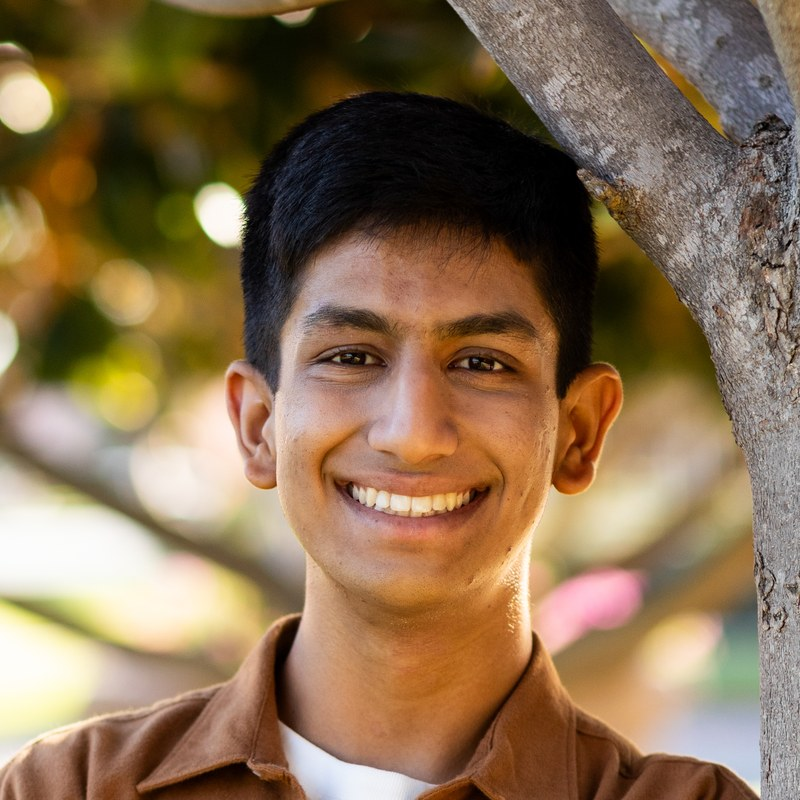

WARP-RM: A Warp-Augmented Relative Progress Reward Model for Data Curation
CoRL 2026
A self-supervised reward model that curates behavior cloning data with no human annotations — filtering suboptimal frames takes t-shirt folding from 2/20 to 19/20.

I’m an undergraduate at UC Berkeley studying Electrical Engineering and Computer Science. Since 2024 I’ve been a researcher in AUTOLab at Berkeley AI Research, advised by Prof. Ken Goldberg.
My research is on robot learning — how to get more out of the demonstration data we collect, and how to build systems that hold up outside the lab. Lately that’s meant reward models for curating imitation learning data, semantic querying over heterogeneous robot datasets, and bimanual manipulation. I’ve also spent time making large models cheaper to run, at Amazon Lab126 and Jane Street.
I’m always happy to talk about research — feel free to send me an email.
WARP-RM: A Warp-Augmented Relative Progress Reward Model for Data Curation
CoRL 2026
A self-supervised reward model that curates behavior cloning data with no human annotations — filtering suboptimal frames takes t-shirt folding from 2/20 to 19/20.
RoboSQ: Semantic Data Queries for Semi-structured Heterogeneous Robot Datasets
ICRA 2026
A VLM-based pipeline that finds and removes sub-optimal teleoperated demonstrations, and measures what that does to ACT and π0.5 policies.
MOTORCYCLE 1.0: Automating Bimanual Cable Routing Around Fixtures on the NIST Task Board
CASE 2025 (oral) · ICRA Workshop 2025
A bimanual YuMi system reaching 84% cable routing success on NIST Task Board 4, combining learned perception, collision-avoidant planning, and slack management.
ICRA 2025 (oral) · CoRL Workshop 2024 · ICRA Workshop 2025 — Arts in Robotics Undergraduate Student Research Award
An LLM-driven system that generates 3D assembly designs from text and available parts, reaching 99.2% placement success with a perturbation-based reset pipeline that improved success rates by 353%.
Static Task Scheduling for Parallel Execution of Large-Scale Multidisciplinary Design Optimization Models
AIAA SciTech Forum 2024
* denotes equal contribution.